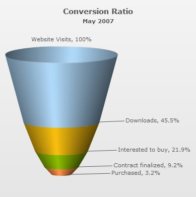
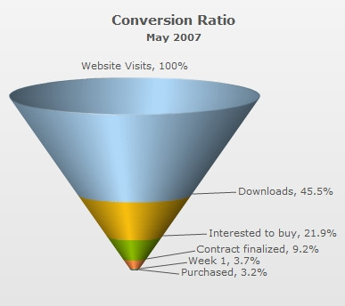

| Creating a simple Funnel chart | ||||||||||||
Since funnel charts are mostly used to show streamlined data, here, we'll create a simple funnel chart to show the "Sales Conversion Ratio" of a product website for a particular month. The chart will display the various processes involved in sales and how many targeted customers were filtered out in each process. The chart will look as under: |
||||||||||||
|  |
||||||||||||
| Data to show | ||||||||||||
| We'll be showing the following data on the chart: | ||||||||||||
|
||||||||||||
| Here, we've divided the entire sales process in five simple steps (though you can have any number of steps in your process). The process starts when a unique visitor visits the website and ends when he purchases the intended product. | ||||||||||||
| The above data needs to be converted into XML/JSON, for use by funnel chart. The converted XML/JSON will look as under: | ||||||||||||
<chart caption="Conversion Ratio" subcaption="May 2007" showPercentValues="1" decimals="1" baseFontSize="11"> {
"chart": {
"caption": "Conversion Ratio",
"subcaption": "May 2007",
"showpercentvalues": "1",
"decimals": "1",
"basefontsize": "11",
"issliced": "1"
},
"data": [
{
"label": "Website Visits",
"value": "385634"
},
{
"label": "Downloads",
"value": "175631"
},
{
"label": "Interested to buy",
"value": "84564"
},
{
"label": "Contract finalized",
"value": "35654"
},
{
"label": "Purchased",
"value": "12342"
}
]
}
|
||||||||||||
Here, we've:
For detailed explanation on JSON data format click here. When you now view the chart (after embedding it in HTML code) with above XML, you'll see it as under: |
||||||||||||
| See it live! | ||||||||||||
FusionWidgets has created the funnel segments based on the data you provided. Also, it has converted the numbers into percentage setting the following: | ||||||||||||
| Same slant angle for each funnel | ||||||||||||
In the above example, each funnel slice has its width according to its data (top and bottom openings proportional to data in and out respectively, to get a visual cue of the funneling rate as compared to other funnels depicting funneling/screening rate of allied processes). However, if you do not want the width of each funnel to depend on its data, you can set: | ||||||||||||
|
This will result in: |
||||||||||||
|  |
||||||||||||
| See it live! | ||||||||||||
| As you can see, each funnel now has the same slant angle. The variation in data can be visualized only from each funnel's height. |